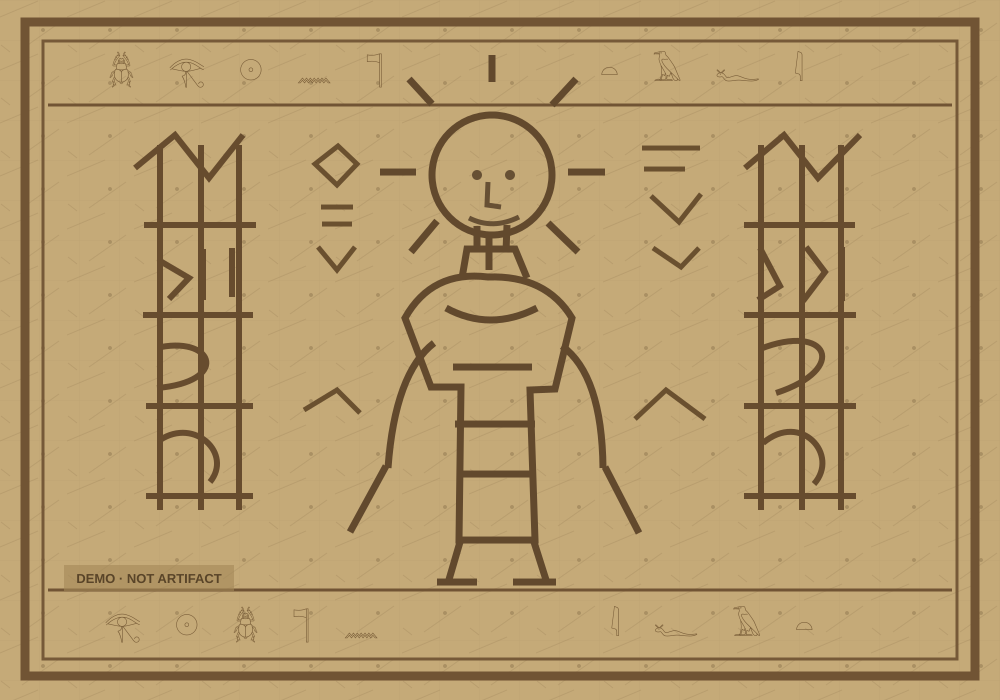
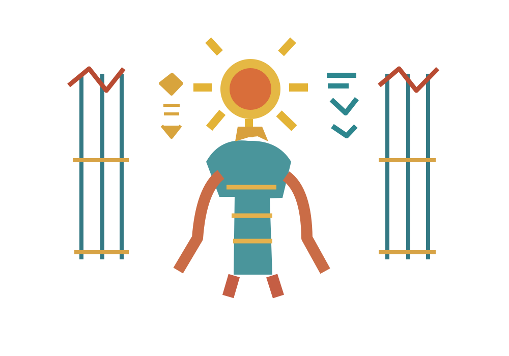

تعرف على النقش
ملف targets.mind يحتوي بصمات الصور التي تحددها أنت؛ يمكن تضمين عدة نقوش وزوايا.
وجّه كاميرا هاتفك نحو النقش، واكتشف تصورًا لطبقاته اللونية فوق الحجر الحقيقي. تجربة تعليمية تفاعلية، من المتصفح مباشرة وبدون تنزيل تطبيق.
للتجربة، افتح اللوحة التجريبية على شاشة ثانية أو اطبعها، ثم وجّه كاميرا هاتفك إليها.


ملف targets.mind يحتوي بصمات الصور التي تحددها أنت؛ يمكن تضمين عدة نقوش وزوايا.
ضع ملف PNG شفافًا مطابقًا للصورة المرجعية، ويتتبع موضعه مع حركة الكاميرا.
استوديو مجاني داخل الموقع يجهّز ملف التتبع وملفات النشر مباشرة من المتصفح.